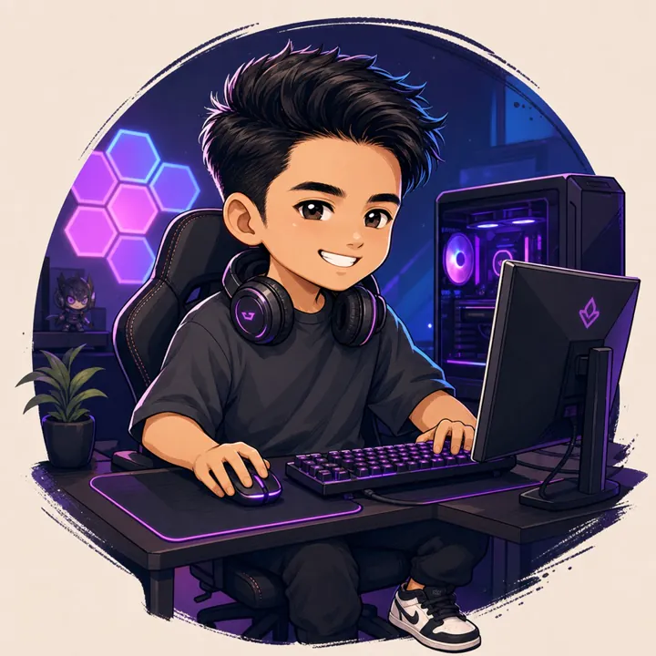
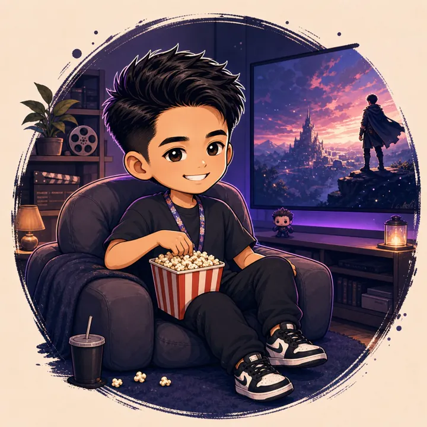
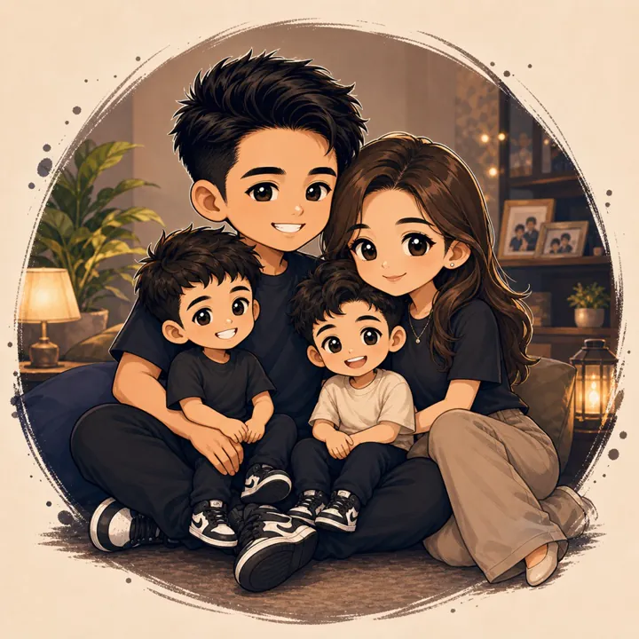
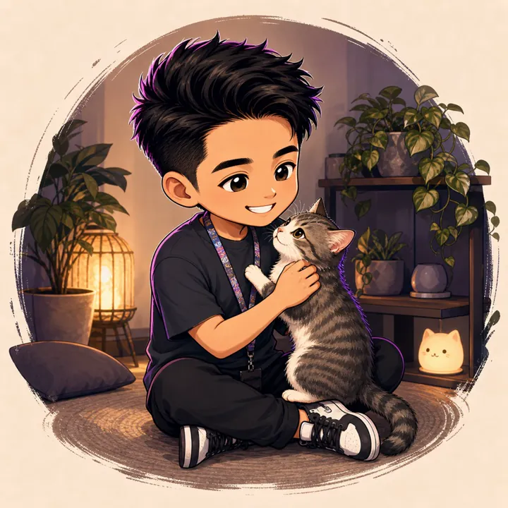
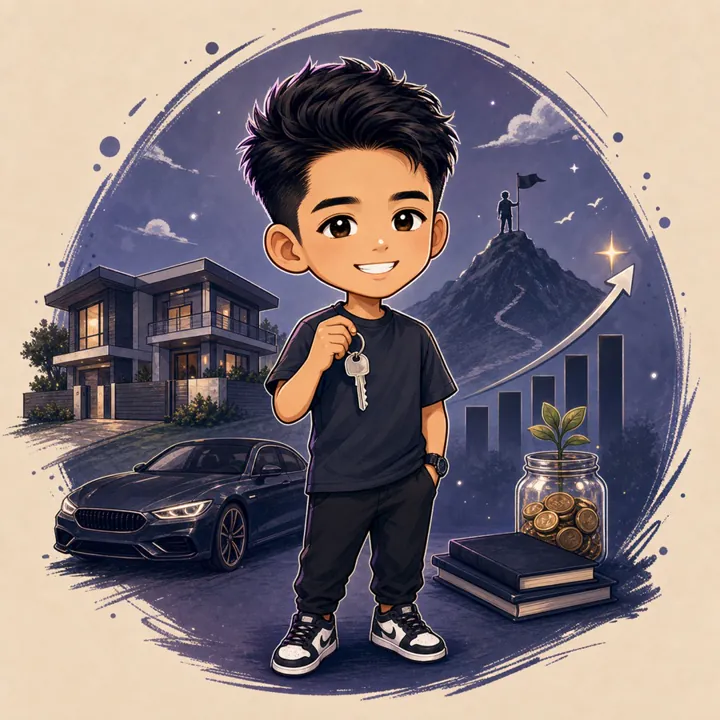

About Me
Orpheuzkaze
Growth Manager, Community Manager, Moderator, and Partnership specialist focused on helping Web3 projects move from initial attention to sustained community traction.
With a background in Information Technology, I have built my career around community building, digital growth, campaign execution, and ecosystem partnerships within Web3.
In recent years, I have worked across AI, gaming, NFT, and blockchain projects, supporting growth through social media, go-to-market planning, collaborations, AMAs, offline events, and user acquisition strategy.
My approach is grounded in practical execution: building the right partnerships, strengthening community momentum, improving visibility, and helping projects turn interest into active, engaged users.

Get To Know Me
Beyond the work.
A few personal interests that shape how I work and connect with others.

Gamer
A dedicated PC gamer with a love for both competitive and casual play
Read more
I have been a PC gamer for many years and still make time for a good session whenever I can. While I enjoy a wide range of games, Dota 2 remains a personal favorite. Gaming helps me stay sharp in strategy, patience, and focus under pressure.
Music Lover An enthusiast of R&B and Indonesian hip-hop Read more
My playlist is a thoughtful mix of R&B and Indonesian hip-hop. Music helps me stay focused during work and brings positive energy to my time outside of it.
Singing Music as a meaningful emotional outlet Read more
Singing is one of the most natural ways for me to release stress and reset my mindset. It keeps me grounded and helps me maintain balance in both work and life.

Watching Movies / Series
A genuine appreciation for stories, culture, and language
Read more
Films and series allow me to unwind while deepening my appreciation for different cultures and languages. My all-time favorite movie is Interstellar, and my favorite anime is Shingeki no Kyojin.

Family First
Family is my greatest priority
Read more
Family always comes first. Time with the people closest to me keeps me grounded, gives me purpose, and reminds me of what matters most beyond professional life.
AI Agents & Workflows A thoughtful interest in agentic systems Read more
I follow developments in AI agents, agentic workflows, and automation with genuine interest. I enjoy exploring how these systems can support more efficient and effective execution.

Cat Lover
A lifelong appreciation for cats
Read more
I have always had a deep fondness for cats. They bring calm energy, personality, and a quiet sense of comfort that makes everyday life feel a little lighter.

Early Milestone
A milestone shaped by discipline and consistency
Read more
An early financial milestone was meaningful not only in itself, but as a reflection of discipline, sacrifice, consistency, and building lasting security for my family.